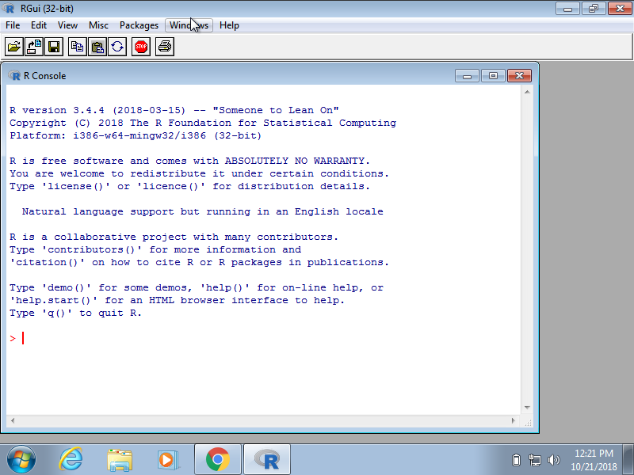

Chapter 1 R Basics
In this book we will be using the R software environment for all our analysis. Throughout the book you will learn R and data analysis techniques simultaneously. However, we need to introduce basic R syntax to get you started. In this chapter, rather than cover every R skill you need, we introduce just enough so that you can understand subsequent chapters where we provide more in depth coverage, building upon what you learn in this chapter. We find that we better retain R knowledge when we learn it to solve a specific problem.
In this chapter, as done throughout the book, we will use a motivating case study. We ask a specific question related to crime in United States and provide a relevant dataset. Some basic R skills will permit us to answer the motivating question.
1.1 Motivating Case Study
Imagine you live in Europe and are offered a job in a US company with many locations across all states. It is a great job but news with headlines such as US Gun Homicide Rate Higher Than Other Developed Countries have you worried. Charts like this make you worry even more:

Or even worse, this version from everytown.org:

But then you remember that the US is a large and diverse country with 50 very different states as well as the District of Columbia (DC).

California, for example, has a larger population than Canada and 20 US states have populations larger than that of Norway. In some respects the variability across states in the US is akin to the variability across countries in Europe. Furthermore, although not included in the charts above, the murder rates in Lithuania, Ukraine, and Russia are higher than 4 per 100,000. So perhaps the news reports that worried you are too superficial. You have options of where to live and want to find out how safe each state is. We will gain some insights by examining data related to gun homicides in the US using R.
Before we get started with our example, we need to cover logistics as well as some of the very basic building blocks that are required to gain more advanced R skills. Be aware that the usefulness of some of these building blocks may not be immediately obvious, but later in the book you will appreciate having mastered these skills.
1.2 Why R?
R is not a programming language like C or Java. It was not created by software engineers for software development. Instead, it was developed by statisticians as an interactive environment for data analysis. You can read the full history here. The interactivity is an indispensable feature in data science because, as you will soon learn, the ability to quickly explore data is a necessity for success in this field. However, like in other programming languages, you can save your work as scripts which can be easily executed at any moment. These scripts serve as a record of the analysis you performed, a key feature that facilitates reproducible work. If you are an expert programmer, you should not expect R to follow the conventions you are used to since you will be disappointed. If you are patient, you will come to appreciate the unequal power of R when it comes to data analysis and data visualization specifically.
Other attractive features of R are the following:
- R is free and open source.
- It runs across all major platforms: Windows, Mac Os, UNIX/Linux.
- Scripts and data objects can be shared seamlessly across platforms.
- There is a large, growing, and active community of R users and, as a result, there are numerous resources for learning and asking questions.
- It easy for others to contribute add-ons which enables developers to share software implementations of new data science methodologies. This gives R users early access to the latest methods and to tools which are developed for a wide variety of disciplines, including ecology, molecular biology, social sciences, and geography, just to name a few examples.
1.3 Getting Started
1.3.1 Installing R
You can download R freely from the Comprehensive R Archive Network (CRAN). It is relatively straightforward, but if you need further help you can try the following resources:
If you want to try out R without installing it, you can access a web based console such as R fiddle.
1.3.2 The R console
Interactive data analysis usually occurs on the R console that executes commands as you type them. There are several ways to gain access to an R console. One way is to simply start R on your computer. The console looks something like this:

As a quick example, try using the console to calculate a 15% tip on a meal that cost $19.71:
0.15 * 19.71
#> [1] 2.96Note that in this book, grey boxes are used to show R code types into the R console. The symbol #> is used to denote what the R console outputs.
1.3.3 Scripts
One of the great advantages of R over point-and-click analysis software is that you can save your work as scripts. You can edit and save these scripts using a text editor. We highly recommend working on an interactive integrated development environment (IDE) such as RStudio, which includes an editor with many R specific features, as well as a console to execute your code, and other useful panes including one to show figures.

Note that most web-based R consoles also provide a pane to edit scripts, but not all permit you to save the scripts for later use.
1.3.4 Installing RStudio
Instructions on how to install RStudio are here and for Windows we have special instructions here.
Once you install RStudio you can simply start RStudio rather than R since that program automatically starts R. But don’t be confused. R is a different piece of software and you can’t run RStudio without first installing R.
If you are going to follow along with RStudio as you read this book, you might consider reading the chapter five sections specifically dedicated to RStudio. RStudio includes many useful features other than providing a script editor and you want to familiarize yourself with these.
And remember the R scripts used to generate this book can be found on GitHub [ADD LINK].
1.4 The R ecosystem
The functionality provided by a fresh install of R is only a small fraction of what is possible. In fact, we refer to what you get after your first install as base R. The extra functionality comes from add-ons available from developers. There are currently hundreds of these available from CRAN and many others shared via other repositories such as GitHub. However because not everybody needs all available functionality, we instead make different components available via packages. R makes it very easy to install packages from within R. For example, to install the dslabs package which we use to share dataset and code related to this book you would type:
install.packages("dslabs")In RStudio you can navigate to the Tools tab and select install packages. We can then load the package into our R sessions using the library function:
library(dslabs)As you go through this book you will see that we load packages without installing them. This is because once you install a package, it remains installed and only needs to be loaded with library. The package remains loaded until we quit the R session. If you try to load a package and get an error, it probably means you need to install it first.
1.5 The Very Basics
Before we get started with the motivating dataset we need to cover the very basics of R.
1.5.1 Objects
Suppose a high school student asks us for help solving several quadratic equations of the form \(ax^2+bx+c = 0\). The quadratic formula gives us the solutions:
\[ \frac{-b - \sqrt{b^2 - 4ac}}{2a}\,\, \mbox{ and } \frac{-b + \sqrt{b^2 - 4ac}}{2a} \] which of course change depending on the values of \(a\), \(b\), and \(c\). One advantage of programming languages is that we can define variables and write expressions with these variables, similar to how we do so in math, but obtain a numeric solution. We will write out general code for the quadratic equation below, but if we are asked to solve \(x^2 + x -1 = 0\) then we define:
a <- 1
b <- 1
c <- -1which stores the values to use later. Note that we use <- to assign values to the variables.
Note: We can assign using = instead of <- but we recommend against using = to avoid confusion.
Copy and paste the code above into your console to define the three variables. Note that R does not print anything when we make this assignment. This means the objects were defined successfully. Had you made a mistake you would have received an error message.
To see the value stored in a variable we simply ask R to evaluate a and it shows the stored value:
a
#> [1] 1A more explicit way to ask R to show us the value stored in a is using print like this:
print(a)
#> [1] 1We use the term object to describe stuff that is stored in R. Variables are examples, but objects can also be more complicated entities such as functions, which are described later.
1.5.2 The Workspace
As we define object in the console, we are actually changing the workspace. You can see all the variables saved in your workspace by typing:
ls()
#> [1] "a" "b" "c" "fifty_states"
#> [5] "murders"In RStudio the Environment tab shows the values

We should see a, b, and c. If you try to recover the value of a variable that is not in your workspace, you receive an error. For example, if you type x you will receive the following message: Error: object 'x' not found.
Now since these values are saved in variables, to obtain a solution to our equation we use the quadratic formula to obtain the answer:
(-b + sqrt(b^2 - 4*a*c) ) / ( 2*a )
#> [1] 0.618
(-b - sqrt(b^2 - 4*a*c) ) / ( 2*a )
#> [1] -1.621.5.3 Functions
Once you define variables, the data analysis process can usually be described as a series of functions applied to the data. R includes several predefined functions and most of the analysis pipelines we construct make extensive use of these.
Note that we already used the install.packages, library, and ls functions. And we used the function sqrt to solve the quadratic equation above. There are many more prebuild functions and even more can be added through packages. These functions do not appear in the workspace because you did not define them, but they are available for immediate use.
In general, to evaluate a function we need to uses parentheses. If you type ls the function is not evaluated and instead R shows you the code that defines the function. If you type ls() the function is evaluated and, as seen above, we see objects in the workspace.
Unlike ls, most functions require one or more arguments. Here is an example of how we assign object to the argument of the function log. Remember that we defined a to be 1 above:
log(8)
#> [1] 2.08
log(a)
#> [1] 0You can find out what the function expects and what it does by reviewing the very useful manuals included in R. You can get help by using the help function like this:
help("log")and for most functions we can use the shorthand:
?logThe help file will show you what arguments the function is expecting. For example, log needs x and base to run. However, some arguments are required and others are optional. You can determine which arguments are optional by noting, in the help document, that a default value is assigned with =. Defining these is optional. For example, the base of the function log defaults to base = exp(1) making log the natural log by default.
If you want a quick look at the arguments without opening the help system you can type:
args(log)
#> function (x, base = exp(1))
#> NULLYou can change the default values by simply assigning another object:
log(8, base = 2)
#> [1] 3Note that we have not been specifying the argument x as such:
log(x = 8, base = 2)
#> [1] 3The above code works, but we can save ourselves some typing because, if no argument name is used, R assumes you are entering arguments in the order shown in the help file or by args. So by not using the names, it assumes the arguments are x followed by base:
log(8,2)
#> [1] 3If using the arguments’ names, then we can include them in whatever order we want:
log(base = 2, x = 8)
#> [1] 3To specify arguments we must use =, and cannot use <-.
There are some exceptions to the rule that functions need the parenthesis to be evaluated. Among these, the most commonly used are the arithmetic and relational operators. For example:
2 ^ 3
#> [1] 8You can see the arithmetic operators by typing:
help("+") or
?"+"and the relational operators typing
help(">") or
?">"1.5.4 Other prebuilt objects
There are several datasets that are included for users to practice and test out functions. You can see all the available datasets by typing
data()This shows you the object name for these datasets. These datasets are objects that can be used by simply typing the name, for example typing
co2will show you Mauna Loa atmospheric CO2 concentration data.
Other prebuilt objects are mathematical quantities such as the constant \(\pi\) and \(\infty\)
pi
#> [1] 3.14
Inf+1
#> [1] Inf1.5.5 Variable names
Here we used the letters a, b, and c as variable names, but variable names can be almost anything. Some basic rules in R is that they have to start with a letter, can’t contain spaces and we avoid variables that are predefined in R, for example don’t use install.packages as a variable name. Don’t type install.packages <- 2!
A nice convention to follow is to use meaningful words that describe what is stored, use only lower case, and use underscores as a substitute for spaces. For example, for the quadratic equations we could use something like this:
solution_1 <- (-b + sqrt(b^2 - 4*a*c) ) / ( 2*a )
solution_2 <- (-b - sqrt(b^2 - 4*a*c) ) / ( 2*a )1.5.6 Saving your workspace
Values remain in the workspace until you end your session or you erase them with the function rm. But workspaces can be saved for later use. In fact, when you quit R, the programs asks you if you want to do this. If you do, the next time you start R, the program will restore the workspace.
We actually recommend against saving the workspace this way because as you start working on different projects, it will become harder to keep track of what is saved. Instead we recommend you assign the workspace a specific name. You can do this by using the function save or save.image. To load you use the function load. When saving a workspace we recommend the suffix rda or RData. In RStudio, you can also do this by navigating to the Session tab and Save Workspace as. You can later load it using the Load Workspace options in the same tab. You can read the help pages on save, save.image and load to learn more.
1.5.7 Scripts
To solve another equation such as \(3x^2 + 2x -1\) we can copy and paste the code above but this time redefine the variables and recompute the solution:
a <- 3
b <- 2
c <- -1
(-b + sqrt(b^2 - 4*a*c) ) / ( 2*a )
(-b - sqrt(b^2 - 4*a*c) ) / ( 2*a )By creating and saving a script with the code above, we would not need to retype everything each time and instead simply change the variable names. Try writing the script above into an editor and notice how much easier it is to change the variables and receive an answer.
Exercises
What is the sum of the first 100 positive integers? There is a formula that tells us the sum of integers \(1\) through \(n\). It is \(n (n-1)/2\). Define \(n=100\) and then use R to compute the sum of \(1\) through \(100\) using the formula. What is the sum?
Now use the same formula to compute the sum of the integers from 1 through 1,000.
Look at the result of typing the following code into R:
n <- 1000 x <- seq(1, n) sum(x)Based on the result, what do you think the functions
seqandsumdo? You can use the help system:sumcreates a list of numbers andseqadds them up.seqcreates a list of numbers andsumadds them up.seqcomputes the difference between two arguments andsumcomputes the sum of 1 through 1000.sumalways returns the same number
In math and programming we say we evaluate a function when we replace the argument with a given number. So if we type
sqrt(4), we evaluate thesqrtfunction. In R you can evaluate a function inside another function. The evaluations happen from the inside out. Use one line of code to compute the log, in base 10, of the square root of 100.Which of the following will always return the numeric value stored in
x? You can try out examples and use the help system if you want.log(10^x)log10(x^10)log(exp(x))exp(log(x, base = 2))
1.6 Data types
Variables in R can be of different types. For example, we need to distinguish numbers from character strings and tables from simple lists of numbers. The function class helps us determine what type of object we have:
a <- 2
class(a)
#> [1] "numeric"To work efficiently in R it is important to learn the different types of variables and what we can do with these.
1.6.1 Data frames
Up to now, the variables we have defined are just one number. This is not very useful for storing data. The most common way of storing a dataset in R is in a data frame. Conceptually, we can think of a data frame as a table with rows representing observations and the different variables reported for each observation defining the columns. Data frames are particularly useful for datasets because we can combine different data types into one object.
We stored the data for our motivating example in a data frame. You can access this dataset by loading the dslabs library and loading the murders dataset using the data function:
library(dslabs)
data(murders)To see that this is in fact a data frame we type:
class(murders)
#> [1] "data.frame"1.6.2 Examining an object
The function str is useful to find out more about the structure of an object:
str(murders)
#> 'data.frame': 51 obs. of 5 variables:
#> $ state : chr "Alabama" "Alaska" "Arizona" "Arkansas" ...
#> $ abb : chr "AL" "AK" "AZ" "AR" ...
#> $ region : Factor w/ 4 levels "Northeast","South",..: 2 4 4 2 4 4 1 2 2 2 ...
#> $ population: num 4779736 710231 6392017 2915918 37253956 ...
#> $ total : num 135 19 232 93 1257 ...This tells us much more about the object. We see that the table has 51 rows (50 states plus DC) and five variables. We can show the first six lines using the function head:
head(murders)
#> state abb region population total
#> 1 Alabama AL South 4779736 135
#> 2 Alaska AK West 710231 19
#> 3 Arizona AZ West 6392017 232
#> 4 Arkansas AR South 2915918 93
#> 5 California CA West 37253956 1257
#> 6 Colorado CO West 5029196 65In this dataset each state is considered an observation and five variables are reported for each state.
Before we go any further in answering our original question about different states, let’s learn more aboutthe components of this object.
1.6.3 The accessor
For our analysis we will need to access the different variables represented by columns included in this data frame. To access these variables we use the accessor operator $ in the following way:
murders$population
#> [1] 4779736 710231 6392017 2915918 37253956 5029196 3574097
#> [8] 897934 601723 19687653 9920000 1360301 1567582 12830632
#> [15] 6483802 3046355 2853118 4339367 4533372 1328361 5773552
#> [22] 6547629 9883640 5303925 2967297 5988927 989415 1826341
#> [29] 2700551 1316470 8791894 2059179 19378102 9535483 672591
#> [36] 11536504 3751351 3831074 12702379 1052567 4625364 814180
#> [43] 6346105 25145561 2763885 625741 8001024 6724540 1852994
#> [50] 5686986 563626But how did we know to use population? Above, by applying the function str to the object murders, we revealed the names for each of the five variables stored in this table. We can quickly access the variable names using:
names(murders)
#> [1] "state" "abb" "region" "population" "total"It is important to know that the order of the entries in murders$population preserves the order of the rows in our data table. This will later permit us to manipulate one variable based on the results of another. For example, we will be able to order the state names by the number of murders.
Tip: R comes with a very nice auto-complete functionality that saves us the trouble of typing out all the names. Try typing murders$p then hitting the tab key on your keyboard. This functionality and many other useful auto-complete features are availalbe when working in RStudio.
1.6.4 Vectors: numerics, characters, and logical
Note that the object murders$population is not one number, but several. We call these types of objects vectors. A single number is technically a vector, but in general we use vectors to refer to objects with several entries. The function length tells you how many entries are in the vector:
pop <- murders$population
length(pop)
#> [1] 51This particular vector is numeric since population sizes are numbers:
class(pop)
#> [1] "numeric"In a numeric vector, every entry must be a number.
To store character strings, vectors can also be of class character. For example, the state names are characters:
class(murders$state)
#> [1] "character"As with numeric vectors, all entries in a character vector need to be a character.
Another important type are logical vectors. These must be either TRUE or FALSE.
z <- 3 == 2
z
#> [1] FALSE
class(z)
#> [1] "logical"Here the == is a relational operator asking if 3 is equal to 2. Remember that in R, if you just use one = you actually assign.
You can see the other relational operators by typing:
?ComparisonIn future sections you will see how useful relational operators can be.
Advanced: Mathematically, the values in pop are integers and there is an integer class in R. However, by default, numbers are assigned class numeric even when they are round integers. For example, class(1) returns numeric. You can turn them into class integer with as.integer(1) or add by adding an L like this: 1L. Note the class by typing: class(1L)
1.6.5 Factors
In the murders dataset we might expect the region to also be a character vector. However it is not:
class(murders$region)
#> [1] "factor"It is a factor. Factors are useful for storing categorical data. We can notice that there are only 4 regions by using the levels function:
levels(murders$region)
#> [1] "Northeast" "South" "North Central" "West"So, in the background, R stores these levels as integers and keeps a map to keep track of the labels. This is more memory efficient than storing all the characters. However, factors are also a source of confusion as they can easily be confused with characters, but behave differently in different contexts. Remember that factors and characters sometimes result in different behavior from R and that this is a common source of hard to find bugs in our code.
In general, we recommend avoiding factors as much as possible, although they are sometimes necessary to fit models containing categorical data.
1.6.6 Lists
Data frames are a special case of lists. We will cover lists in more detail later, but know that they are useful because you can store any combination of different types. Below is an example of a list we created for you:
record
#> $name
#> [1] "John Doe"
#>
#> $student_id
#> [1] 1234
#>
#> $grades
#> [1] 95 82 91 97 93
#>
#> $final_grade
#> [1] "A"
class(record)
#> [1] "list"We won’t be using lists until later, but you might encounter one in your own exploration of R. For this reason we show you some basics here.
As with data frames, you can extract the components of a list with the accessor $. In fact, data frames are a type of list.
record$student_id
#> [1] 1234We can also use double brackets like this:
record[["student_id"]]
#> [1] 1234You should get used to the fact that in R there are several ways to do the same thing, in particular accessing entries.
Exercises
Load the US murders dataset.
library(dslabs) data("murders")Use the function
strto examine the structure of themurdersobject. We can see that this object is a data frame with 51 rows and five columns. Which of the following best describes the variables represented in this data frame:- The 51 states
- The murder rates for all 50 states and DC
- The state name, the abbreviation of the state name, the state’s region, and the state’s population and total number of murders for 2010
strshows no relevant information
What are the column names used by the data frame for these five variables?
Use the accessor
$to extract the state abbreviations and assign them to the objecta. What is the class of this object?Now use the square brackets to extract the state abbreviations and assign them to the object
b. Use theidenticalfunction to determine ifaandbare the same.We saw that the
regionscolumn stores a factor. You can corroborate this by typing:The function
tabletakes a vector and returns the frequency of each element. You can quickly see how many states are in each region by applying this function. Use this function in one line of code to create a table of states per region.
1.7 Vectors
In R, the most basic unit available to store data are vectors. As we have seen, complex datasets can usually be broken down into components that are vectors. For example, in a data frame each column is a vector. Here we learn more about this important class.
1.7.1 Creating vectors
We can create vectors using the function c, which stands for concatenate. We use c to concatenate entries in the following way:
codes <- c(380, 124, 818)
codes
#> [1] 380 124 818We can also create character vectors. We use the quotes to denote that the entries are characters rather than variable names.
country <- c("italy", "canada", "egypt")In R you can also use single quotes:
country <- c('italy', 'canada', 'egypt')But be careful not to cofuse the single quote ’ with the back quote `.
By now you should know that if you type:
country <- c(italy, canada, egypt)you receive an error because the variables italy, canada and egypt are not defined: R looks for variables with those names and returns an error.
1.7.2 Names
Sometimes it is useful to name the entries of a vector. For example, when defining a vector of country codes, we can use the names to connect the two:
codes <- c(italy = 380, canada = 124, egypt = 818)
codes
#> italy canada egypt
#> 380 124 818The object codes continues to be a numeric vector:
class(codes)
#> [1] "numeric"but with names:
names(codes)
#> [1] "italy" "canada" "egypt"If the use of strings without quotes looks confusing, know that you can use the quotes as well:
codes <- c("italy" = 380, "canada" = 124, "egypt" = 818)
codes
#> italy canada egypt
#> 380 124 818There is no difference between this function call and the previous one. This is one of the many ways in which R is quirky compared to other languages.
We can also assign names using the names functions:
codes <- c(380, 124, 818)
country <- c("italy","canada","egypt")
names(codes) <- country
codes
#> italy canada egypt
#> 380 124 8181.7.3 Sequences
Another useful function for creating vectors generates sequences:
seq(1, 10)
#> [1] 1 2 3 4 5 6 7 8 9 10The first argument defines the start, and the second the end. The default is to go up in increments of 1, but a third argument lets us tell it how much to jump by:
seq(1, 10, 2)
#> [1] 1 3 5 7 9If we want consecutive integers, we can use the following shorthand:
1:10
#> [1] 1 2 3 4 5 6 7 8 9 10When we use these function, R produces integers, not numerics, because they are typically used to index something:
class(1:10)
#> [1] "integer"However, as soon as we create sequence including non-integer, the class changes:
class(seq(1, 10))
#> [1] "integer"
class(seq(1, 10, 0.5))
#> [1] "numeric"1.7.4 Subsetting
We use square brackets to access specific elements of a vector. For the vector codes we defined above, we can access the second element using:
codes[2]
#> canada
#> 124You can get more than one entry by using a multi-entry vector as an index:
codes[c(1,3)]
#> italy egypt
#> 380 818The sequences defined above are particularly useful if we want to access, say, the first two elements:
codes[1:2]
#> italy canada
#> 380 124If the elements have names, we can also access the entries using these names. Below are two examples.
codes["canada"]
#> canada
#> 124
codes[c("egypt","italy")]
#> egypt italy
#> 818 3801.7.5 Coercion
In general, coercion is an attempt by R to be flexible with data types. When an entry does not match the expected, some of the prebuilt R functions try to guess what was meant before throwing an error. This can also lead to confusion. Failing to understand coercion can drive programmers crazy when attempting to code in R since it behaves quite differently from most other languages in this regard. Let’s learn about it with some examples.
We said that vectors must be all of the same type. So if we try to combine, say, numbers and characters, you might expect an error:
x <- c(1, "canada", 3)But we don’t get one, not even a warning! What happened? Look at x and its class:
x
#> [1] "1" "canada" "3"
class(x)
#> [1] "character"R coerced the data into characters. It guessed that because you put a character string in the vector, you meant the 1 and 3 to actually be character strings "1" and “3”. The fact that not even a warning is issued is an example of how coercion can cause many unnoticed errors in R.
R also offers functions to change from one type to another. For example, you can turn numbers into characters with:
x <- 1:5
y <- as.character(x)
y
#> [1] "1" "2" "3" "4" "5"And you can turn it back with as.numeric.
as.numeric(y)
#> [1] 1 2 3 4 5This function is actually quite useful since datasets that include numbers as character strings are common.
1.7.6 Not Availables (NA)
When a function tries to coerce on type to another and encounters an impossible case, it usually gives us a warning and turns the entry into a special value called an NA for “not available”. For example:
x <- c("1", "b", "3")
as.numeric(x)
#> Warning: NAs introduced by coercion
#> [1] 1 NA 3R does not have any guesses for what number you want when you type b so it does not try.
As a data scientist you will encounter the NA often as they are generally used for missing data, a common problem in real life datasets.
Exercises
Use the function
cto create a vector with the average high temperatures in January for Beijing, Lagos, Paris, Rio de Janeiro, San Juan, and Toronto, which are 35, 88, 42, 84, 81, and 30 degrees Fahrenheit. Call the objecttemp.Now create a vector with the city names and call the object
city.Use the
namesfunction and the objects defined in the previous exercises to associate the temperature data with its corresponding city.Use the
[and:operators to access the temperature of the first three cities on the list.Use the
[operator to access the temperature of Paris and San Juan.Use the
:operator to create a sequence of numbers \(12,13,14,\dots,73\).Create a vector containing all the positive odd numbers smaller than 100.
Create a vector of numbers that starts at 6, does not pass 55, and adds numbers in increments of 4/7: 6, 6+4/7, 6+8/7, etc.. How many numbers does the list have? Hint: use
seqandlength.What is the class of the following object
a <- seq(1, 10, 0.5)?What is the class of the following object
a <- seq(1, 10)?The class of
class(a<-1)is numeric not integer. R defaults to numeric and, to force a number, you need to add the letterL. Confirm that the class of1Lis integer.Define the following vector:
x <- c("1", "3", "5")and coerce it to get integers.
1.8 Sorting
Now that we have mastered some basic R knowledge, let’s try to gain some insights into the safety of different states in the context of gun murders.
1.8.1 sort
Say we want to rank the states from least to most gun murders. The function sort sorts a vector in increasing order. We can therefore see the largest number of gun murders by typing:
library(dslabs)
data(murders)
sort(murders$total)
#> [1] 2 4 5 5 7 8 11 12 12 16 19 21 22 27
#> [15] 32 36 38 53 63 65 67 84 93 93 97 97 99 111
#> [29] 116 118 120 135 142 207 219 232 246 250 286 293 310 321
#> [43] 351 364 376 413 457 517 669 805 1257However, this does not give us information about which states have which murder totals. For example, we don’t know which state had 1257 murders in 2010.
1.8.2 order
The function order is closer to what we want. It takes a vector as input and returns the vector of indexes that sorts the input vector. This may sound confusing so let’s look at a simple example. We can create a vector and sort it:
x <- c(31, 4, 15, 92, 65)
sort(x)
#> [1] 4 15 31 65 92Rather than sort the input vector, the function order returns the index that sorts input vector:
index <- order(x)
x[index]
#> [1] 4 15 31 65 92This is the same output as that returned by sort(x). If we look at this index, we see why it works:
x
#> [1] 31 4 15 92 65
order(x)
#> [1] 2 3 1 5 4The second and fourth entry of x are the smallest, so order(x) starts with 2. The next smallest is the third entry, so the second entry is 3 and so on.
How does this help us order the states by murders? First remember that the entries of vectors you access with $ follow the same order as the rows in the table. So, for example, these two vectors, containing the state names and abbreviations respectively, are matched by their order:
murders$state[1:10]
#> [1] "Alabama" "Alaska" "Arizona"
#> [4] "Arkansas" "California" "Colorado"
#> [7] "Connecticut" "Delaware" "District of Columbia"
#> [10] "Florida"
murders$abb[1:10]
#> [1] "AL" "AK" "AZ" "AR" "CA" "CO" "CT" "DE" "DC" "FL"This means we can now order the state names by their total murders by first obtaining the index that orders the vectors according to murder totals, and then indexing the state names or abbreviation vector:
ind <- order(murders$total)
murders$abb[ind]
#> [1] "VT" "ND" "NH" "WY" "HI" "SD" "ME" "ID" "MT" "RI" "AK" "IA" "UT" "WV"
#> [15] "NE" "OR" "DE" "MN" "KS" "CO" "NM" "NV" "AR" "WA" "CT" "WI" "DC" "OK"
#> [29] "KY" "MA" "MS" "AL" "IN" "SC" "TN" "AZ" "NJ" "VA" "NC" "MD" "OH" "MO"
#> [43] "LA" "IL" "GA" "MI" "PA" "NY" "FL" "TX" "CA"According to the above, California had the most murders.
1.8.3 max and which.max
If we are only interested in the entry with the largest value we can use max for the value:
max(murders$total)
#> [1] 1257and which.max for the index of the largest value:
i_max <- which.max(murders$total)
murders$state[i_max]
#> [1] "California"For the minimum we can use min and which.min in the same way.
So is California the most dangerous state? In an upccoming section we argue that we should be considering rates not totals. Before doing that we introduce one last order related function: rank
1.8.4 rank
Although not as frequently used as order and sort, the function rank is also related to order and can be useful. For any given vector it returns a vector with the rank of the first entry, second entry, etc., of the input vector. Here is a simple example:
x <- c(31, 4, 15, 92, 65)
rank(x)
#> [1] 3 1 2 5 4To summarize let’s look at the results of the three functions we have introduced:
| original | sort | order | rank |
|---|---|---|---|
| 31 | 4 | 2 | 3 |
| 4 | 15 | 3 | 1 |
| 15 | 31 | 1 | 2 |
| 92 | 65 | 5 | 5 |
| 65 | 92 | 4 | 4 |
1.8.5 Beware of recycling
Another common source of unnoticed errors in R is the use of recycling. We saw that vectors are added elementwise. So if the vectors don’t match in length it is natural to assume that we should get an error. But we don’t. Notice what happens:
x <- c(1,2,3)
y <- c(10, 20, 30, 40, 50, 60, 70)
x+y
#> Warning in x + y: longer object length is not a multiple of shorter object
#> length
#> [1] 11 22 33 41 52 63 71We do get a warning but no error. For the output, R has recycled the numbers in x: notice the last digit of numbers in the output.
Exercise
For these exercises we will use the US murders dataset. Make sure you load it.
library(dslabs)
data(murders)Use the
$operator to access the population size data and store it the objectpop. Then use thesortfunction to redefinepopso that it is sorted. Finally use the[operator to report the smallest population size.Now instead of the smallest population size, find the index of the entry with the smallest population size. Hint: use
orderinstead ofsort.We can actually perform the same operation as in the previous exercise using the function
which.min. Write one line of code that does this.Now we know how small the smallest state is and we know which row represents it. However, which state is it? Define a variable
statesto be the state names from themurdersdata frame. Report the name of the state with the smallest population.You can create a data frame using the
data.framefunction. Here is a quick example:temp <- c(35, 88, 42, 84, 81, 30) city <- c("Beijing", "Lagos", "Paris", "Rio de Janeiro", "San Juan", "Toronto") city_temps <- data.frame(name = city, temperature = temp)Use the
rankfunction to determine the population size rank (from smallest to biggest) of each state. Save these ranks in an object calledranks, then create a data frame with the state name and its rank. Call the data framemy_df.Repeat the previous exercise but this time order
my_dfso that the states are ordered from least populous to most populous. Hint: create an objectindthat stores the indexes needed to order the population values. Then use the bracket operator[to re-order each column in the data frame.The
na_examplerepresents a series of counts. You can quickly examine the object using:data(na_example) str(na_example) #> int [1:1000] 2 1 3 2 1 3 1 4 3 2 ...However, when we compute the average we obtain an
NAmean(na_example) #> [1] NAThe
is.nareturns a logical vector that tells us which entries areNA. Assign this logical vector to an object calledindand determine how manyNAs doesna_examplehave.Now compute the average again, but only for the entries that are not
NA. Hint: remember the!operator.
1.9 Vector arithmetics
California had the most murders, but does this mean it is the most dangerous state? What if it just has many more people than any other state? We can very quickly confirm that, indeed, California has the largest population:
murders$state[which.max(murders$population)]
#> [1] "California"with over 37 million inhabitants. It is therefore unfair to compare the totals if we are interested in learning how safe the state is.
What we really should be computing is the murders per capita. The reports we describe in the motivating section used murders per 100,000 as the unit. To compute this quantity, the powerful vector arithmetic capabilities of R come in handy.
1.9.1 Rescaling
In R, arithmetic operations on vectors occur element wise. For a quick example suppose we have height in inches:
heights <- c(69, 62, 66, 70, 70, 73, 67, 73, 67, 70)and want to covert to centimeters. Notice what happens when we multiply heights by 2.54:
heights * 2.54
#> [1] 175 157 168 178 178 185 170 185 170 178It multiplied each element by 2.54. Similarly, if we want to compute how many inches taller or shorter than 69 inches, the average height for males, we can subtract it from every entry like this:
heights - 69
#> [1] 0 -7 -3 1 1 4 -2 4 -2 11.9.2 Two vectors
If we have two vectors of the same length, and we sum them in R, they will be added entry by entry as follows:
\[ \begin{pmatrix} a\\ b\\ c\\ d \end{pmatrix} + \begin{pmatrix} e\\ f\\ g\\ h \end{pmatrix} = \begin{pmatrix} a +e\\ b + f\\ c + g\\ d + h \end{pmatrix} \]
The same holds for other mathematical operations, such as -, * and /.
This implies that to compute the murder rates we can simply type:
murder_rate <- murders$total / murders$population * 100000Once we do this, we notice that California is no longer near the top of the list. In fact, we can use what we have learned to order the states by murder rate:
murders$state[order(murder_rate)]
#> [1] "Vermont" "New Hampshire" "Hawaii"
#> [4] "North Dakota" "Iowa" "Idaho"
#> [7] "Utah" "Maine" "Wyoming"
#> [10] "Oregon" "South Dakota" "Minnesota"
#> [13] "Montana" "Colorado" "Washington"
#> [16] "West Virginia" "Rhode Island" "Wisconsin"
#> [19] "Nebraska" "Massachusetts" "Indiana"
#> [22] "Kansas" "New York" "Kentucky"
#> [25] "Alaska" "Ohio" "Connecticut"
#> [28] "New Jersey" "Alabama" "Illinois"
#> [31] "Oklahoma" "North Carolina" "Nevada"
#> [34] "Virginia" "Arkansas" "Texas"
#> [37] "New Mexico" "California" "Florida"
#> [40] "Tennessee" "Pennsylvania" "Arizona"
#> [43] "Georgia" "Mississippi" "Michigan"
#> [46] "Delaware" "South Carolina" "Maryland"
#> [49] "Missouri" "Louisiana" "District of Columbia"Exercises
Previously we created this data frame:
temp <- c(35, 88, 42, 84, 81, 30) city <- c("Beijing", "Lagos", "Paris", "Rio de Janeiro", "San Juan", "Toronto") city_temps <- data.frame(name = city, temperature = temp)Remake the data frame using the code above, but add a line that converts the temperature from Fahrenheit to Celsius.
What is the following sum \(1+1/2^2 + 1/3^2 + \dots 1/100^2\)? Hint: thanks to Euler we know it should be close to \(\pi^2/6\).
Compute the per 100,000 murder rate for each state and store it in the object
murder_rate. Then compute the average murder rate for the US using the functionmean. What is the average?
1.10 Indexing
R provides a powerful and convenient way of indexing vectors. We can, for example, subset a vector based on properties of another vector. We continue our US murders example to demonstrate:
1.10.1 Subsetting with logicals
We have now calculated the murder rate using:
murder_rate <- murders$total / murders$population * 100000 Imagine you are moving from Italy where, according to the ABC news report, the murder rate is only 0.71 per 100,000. You would prefer to move to a state with a similar murder rate. Another powerful feature of R is that we can we can use logicals to index vectors. If we compare a vector to a single number, it actually performs the test for each entry. The following is an example related to the question above:
ind <- murder_rate < 0.71Or if we want to know if its less or equal we can use:
ind <- murder_rate <= 0.71
ind
#> [1] FALSE FALSE FALSE FALSE FALSE FALSE FALSE FALSE FALSE FALSE FALSE
#> [12] TRUE FALSE FALSE FALSE TRUE FALSE FALSE FALSE FALSE FALSE FALSE
#> [23] FALSE FALSE FALSE FALSE FALSE FALSE FALSE TRUE FALSE FALSE FALSE
#> [34] FALSE TRUE FALSE FALSE FALSE FALSE FALSE FALSE FALSE FALSE FALSE
#> [45] FALSE TRUE FALSE FALSE FALSE FALSE FALSENote that we get back a logical vector with TRUE for each entry smaller than or equal to 0.71. To see which states these are, we can leverage the fact that vectors can be indexed with logicals.
murders$state[ind]
#> [1] "Hawaii" "Iowa" "New Hampshire" "North Dakota"
#> [5] "Vermont"In order to count how many are TRUE, the function sum returns the sum of the entries of a vector and logical vectors get coerced to numeric with TRUE coded as 1 and FALSE as 0. Thus we can count the states using:
sum(ind)
#> [1] 51.10.2 Logical operators
Suppose we like the mountains and we want to move to a safe state in the western region of the country. We want the murder rate to be at most 1. So we want two different things to be true. Here we can use the logical operator and, which in R is represented with &. This operation results in TRUE, only when both logicals are TRUE. To see this consider this example:
TRUE & TRUE
#> [1] TRUE
TRUE & FALSE
#> [1] FALSE
FALSE & FALSE
#> [1] FALSEFor our exmaple, we can form two logicals:
west <- murders$region == "West"
safe <- murder_rate <= 1and we can use the & to get a vector of logicals that tells us which states satisfy both conditions:
ind <- safe & west
murders$state[ind]
#> [1] "Hawaii" "Idaho" "Oregon" "Utah" "Wyoming"1.10.3 which
Suppose we want to look up California’s murder rate. For this type of operation, it is convenient to convert vectors of logicals into indexes instead of keeping long vectors of logicals. The function which tells us which entries of a logical vector are TRUE. So we can type:
ind <- which(murders$state == "California")
ind ##this is the index that matches the California entry
#> [1] 5
murder_rate[ind]
#> [1] 3.371.10.4 match
If instead of just one state we want to find out the murder rates for several, say New York, Florida, and Texas, we can use the function match. This function tells us which indexes of a second vector match each of the entries of a first vector:
ind <- match(c("New York", "Florida", "Texas"), murders$state)
ind
#> [1] 33 10 44Now we can look at the murder rates:
murder_rate[ind]
#> [1] 2.67 3.40 3.201.10.5 %in%
If rather than an index we want a logical that tells us whether or not each element of a first vector is in a second, we can use the function %in%. So, say you are not sure if Boston, Dakota and Washington are states, you can find out like this:
c("Boston", "Dakota", "Washington") %in% murders$state
#> [1] FALSE FALSE TRUEWe will be using %in% often throughout the book.
Advanced: There is a connection between match and %in% through which. To see this, notice that the following two lines of code are equivalent:
match(c("New York", "Florida", "Texas"), murders$state)
#> [1] 33 10 44
which(murders$state%in%c("New York", "Florida", "Texas"))
#> [1] 10 33 44Exercises
Start by loading the library and data.
library(dslabs)
data(murders)Compute the per 100,000 murder rate for each state and store it in an object called
murder_rate. Then use the logical operators to create a logical vector, name itlow; that tells us which entries ofmurder_rateare lower thanNow use the results from the previous exercise and the function
whichto determine the indices ofmurder_rateassociated with values lower than 1.Use the results from the previous exercise to report the names of the states with murder rates lower than 1.
Now extend the code from exercise 2 and 3 to report the states in the Northeast with murder rates lower than 1. Hint: use the previously defined logical vector
lowand the logical operator&.In a previous exercise we computed the murder rate for each rate and the average of these numbers. How many states are below the average?
Use the match function to identify the states with abbreviations AK, MI, and IA. Hint: start by defining an index of the entries of
murders$abbthat match the three abbreviations, then use the[operator to extract the states.Use the
%in%operator to create a logical vector that answers the question: which of the following are actual abbreviations: MA, ME, MI, MO, MU ?Extend the code you used in exercise 7 to report the one entry that is not an actual abbreviation. Hint: use the
!operator, which turnsFALSEintoTRUEand vice versa, thenwhichto obtain an index.
1.11 Basic Data Wrangling
Up to now we have been changing vectors by reordering them and subsetting them through indexing. However, once we start more advanced analyses, we will want to prepare data tables for data analysis. We refer to this task as data wrangling. For this purpose we will introduce the dplyr package which provides intuitive functionality for working with tables. In Chapter 6 we will cover the dplyr package in much more depth.
Once you install dplyr you can load it using:
library(dplyr)This package introduces functions that perform the most common operations in data wrangling and uses names for these functions that are relatively easy to remember. For example, to change the data table by adding a new column, we use mutate. To filter the data table to a subset of rows, we use filter. Finally, to subset the data by selecting specific columns, we use select. We can also perform a series of operations, for example select and then filter, by sending the results of one function to another using what is called the pipe operator: %>%. Some details are included below.
1.11.1 Adding a column with mutate
We want all the necessary information for our analysis to be included in the data table. So the first task is to add the murder rates to our data frame. The function mutate takes the data frame as a first argument and the name and values of the variable in the second using the convention name = values. So to add murder rates we use:
murders <- mutate(murders, rate = total / population * 100000)Note that here we used total and population inside the function, which are objects that are not defined in our workspace. So why do we not get an error?
This is one of the main features of dplyr. Function in this package, such mutate, know to look for variables in the data frame provided in the first argument. So in the call to mutate above, total will have the values in murders$total. This approach makes the code much more redable.
We can see the new column is added:
head(murders)
#> state abb region population total rate
#> 1 Alabama AL South 4779736 135 2.82
#> 2 Alaska AK West 710231 19 2.68
#> 3 Arizona AZ West 6392017 232 3.63
#> 4 Arkansas AR South 2915918 93 3.19
#> 5 California CA West 37253956 1257 3.37
#> 6 Colorado CO West 5029196 65 1.29Note: Although we have over-written the original murders object, this does not change the object that loaded with data(murders). If we load the murders data again, the original will over-write our mutated version.
1.11.2 Subsetting with filter
Now suppose that we want to filter the data table to only show the entries for which the murder rate is lower than 0.71. To do this we use the filter function which takes the data table as an argument and then the conditional statement as the next. Like mutate, we can use the unquoted variable names from murders inside the function and it will know we mean the columns and not objects in the workspace.
filter(murders, rate <= 0.71)
#> state abb region population total rate
#> 1 Hawaii HI West 1360301 7 0.515
#> 2 Iowa IA North Central 3046355 21 0.689
#> 3 New Hampshire NH Northeast 1316470 5 0.380
#> 4 North Dakota ND North Central 672591 4 0.595
#> 5 Vermont VT Northeast 625741 2 0.3201.11.3 Selecting columns with select
Although our data table only has six columns, some data tables include hundreds. If we want to view just a few, we can use the dplyr select function. In the code below we select three columns, assign this to a new object and then filter the new object:
new_table <- select(murders, state, region, rate)
filter(new_table, rate <= 0.71)
#> state region rate
#> 1 Hawaii West 0.515
#> 2 Iowa North Central 0.689
#> 3 New Hampshire Northeast 0.380
#> 4 North Dakota North Central 0.595
#> 5 Vermont Northeast 0.320In the call to select, the first argument, murders, is an object but state, region, and rate are variable names.
1.11.4 The pipe: %>%
We wrote the code above because we wanted to show the three variables for states that have murder rates below 0.71. To do this we defined the intermediate object new_table. In dplyr we can write code that looks more like a description of what we want to do:
\[ \mbox{original data } \rightarrow \mbox{ select } \rightarrow \mbox{ filter } \]
For such an operation, we can use the pipe %>%. The code looks like this:
murders %>% select(state, region, rate) %>% filter(rate <= 0.71)
#> state region rate
#> 1 Hawaii West 0.515
#> 2 Iowa North Central 0.689
#> 3 New Hampshire Northeast 0.380
#> 4 North Dakota North Central 0.595
#> 5 Vermont Northeast 0.320This line of code is equivalent to the two lines of code above. What is going on here?
In general, the pipe sends the result of the left side of the pipe to be the first argument of the function on the right side of the pipe. Here is a very simple example:
16 %>% sqrt()
#> [1] 4We can continue to pipe values along:
16 %>% sqrt() %>% log2()
#> [1] 2The above statement is equivalent to log2(sqrt(16))
Remember that the pipe sends values to the first argument so we can define arguments as if the first argument is already defined:
16 %>% sqrt() %>% log(base = 2)
#> [1] 2So when using the pipe with data frames and dplyr we no longer need to specify the required first argument since the dplyr functions we have described all take the data as the first argument. So in the code we wrote:
murders %>% select(state, region, rate) %>% filter(rate <= 0.71)murders is the first argument of the select function and the new data frame, formerly new_table, is the first argument of the filter function.
1.11.5 Creating a data frame
It is sometimes useful for us to create our own data frames. You can do this by using the data.frame function:
grades <- data.frame(names = c("John", "Juan", "Jean", "Yao"),
exam_1 = c(95, 80, 90, 85),
exam_2 = c(90, 85, 85, 90))
grades
#> names exam_1 exam_2
#> 1 John 95 90
#> 2 Juan 80 85
#> 3 Jean 90 85
#> 4 Yao 85 90Warning: By default the function data.frame coerces characters into factors:
class(grades$names)
#> [1] "factor"To avoid this we use the rather cumbersome argument stringsAsFactors:
grades <- data.frame(names = c("John", "Juan", "Jean", "Yao"),
exam_1 = c(95, 80, 90, 85),
exam_2 = c(90, 85, 85, 90),
stringsAsFactors = FALSE)
class(grades$names)
#> [1] "character"Exercises
Load the
dplyrpackage and the murders dataset.library(dplyr) library(dslabs) data(murders)You can add columns using the
dplyrfunctionmutate. This function is aware of the column names and inside the function you can call them unquoted. Like this:murders <- mutate(murders, population_in_millions = population / 10^6)Note that we can write
populationrather thanmurders$population. The functionmutateknows we are grabing columns frommurders.Use the function
mutateto add a murders column namedratewith the per 100,000 murder rate. Make sure you redefinemurdersas done in the example code above and remember the murder rate is defined the total divided by the population size times 100,000.Note that if
rank(x)gives you the ranks ofxfrom lowest to highest,rank(-x)gives you the ranks from highest to lowest. Use the functionmutateto add a columnrankcontaining the rank, from highest to lowest murder rate. Make sure you redeinfe murders.With
dplyrwe can useselectto show only certain columns. For example with this code we would only show the states and population sizes:select(murders, state, population) %>% head() #> state population #> 1 Alabama 4779736 #> 2 Alaska 710231 #> 3 Arizona 6392017 #> 4 Arkansas 2915918 #> 5 California 37253956 #> 6 Colorado 5029196Use
selectto show the state names and abbreviations inmurders. Just show it, do not define a new object.Hint: You can use select to just show one or more columns like this
The
dplyrfunctionfilteris used to choose specific rows of the data frame to keep. Unlkeselectwhich is for columns,filteris for rows. For example you can show just New York row like this:filter(murders, state == "New York") #> state abb region population total rate #> 1 New York NY Northeast 19378102 517 2.67You can use other logical vector to filter rows.
Use
filterto show the top 5 states with the highest murder rates. After we add murder rate and rank, do not change the murders dataset, just show the result. Note that you can filter based on therankcolumn.We can remove rows using the
!=operator. For example to remove Florida we would do this:no_florida <- filter(murders, state != "Florida")Create a new data frame called
no_souththat removes states from the South region. How many states are in this category? You can use the functionnrowfor this.We can also use the
%in%to filter withdplyr. For example you can see the data from New York and Texas like this:filter(murders, state %in% c("New York", "Texas")) #> state abb region population total rate #> 1 New York NY Northeast 19378102 517 2.67 #> 2 Texas TX South 25145561 805 3.20Create a new data frame called
murders_nwwith only the states from the Northeast and the West. How many states are in this category?Suppose you want to live in the Northeast or West and want the murder rate to be less than 1. We want to see the data for the states satisfying these options. Note that you can use logical operators with
filter:filter(murders, population < 5000000 & region == "Northeast") #> state abb region population total rate #> 1 Connecticut CT Northeast 3574097 97 2.714 #> 2 Maine ME Northeast 1328361 11 0.828 #> 3 New Hampshire NH Northeast 1316470 5 0.380 #> 4 Rhode Island RI Northeast 1052567 16 1.520 #> 5 Vermont VT Northeast 625741 2 0.320Add a murder rate column and a rank column as done before. Create a table, call it
my_states, that satisfies both the conditions: it is in the Northeast or West and the murder rate is less than 1. Use select to show only the state name, the rate and the rank.library(dplyr) library(dslabs) data(murders)The pipe
%>%can be used to perform operations sequentially without having to define intermediate objects. After redefining murder to include rate and rank.library(dplyr) murders <- mutate(murders, rate = total / population * 100000, rank = (-rate))in the solution to the previous exercise we did the following:
# Created a table my_states <- filter(murders, region %in% c("Northeast", "West") & rate < 1) # Used select to show only the state name, the murder rate and the rank select(my_states, state, rate, rank) #> state rate rank #> 1 Hawaii 0.515 -0.515 #> 2 Idaho 0.766 -0.766 #> 3 Maine 0.828 -0.828 #> 4 New Hampshire 0.380 -0.380 #> 5 Oregon 0.940 -0.940 #> 6 Utah 0.796 -0.796 #> 7 Vermont 0.320 -0.320 #> 8 Wyoming 0.887 -0.887The pipe
%>%permits us to perform both operation sequentially and without having to define an intermediate variablemy_states. For example we could have mutated and selected in the same line like this:mutate(murders, rate = total / population * 100000, rank = (-rate)) %>% select(state, rate, rank) #> state rate rank #> 1 Alabama 2.824 -2.824 #> 2 Alaska 2.675 -2.675 #> 3 Arizona 3.630 -3.630 #> 4 Arkansas 3.189 -3.189 #> 5 California 3.374 -3.374 #> 6 Colorado 1.292 -1.292 #> 7 Connecticut 2.714 -2.714 #> 8 Delaware 4.232 -4.232 #> 9 District of Columbia 16.453 -16.453 #> 10 Florida 3.398 -3.398 #> 11 Georgia 3.790 -3.790 #> 12 Hawaii 0.515 -0.515 #> 13 Idaho 0.766 -0.766 #> 14 Illinois 2.837 -2.837 #> 15 Indiana 2.190 -2.190 #> 16 Iowa 0.689 -0.689 #> 17 Kansas 2.208 -2.208 #> 18 Kentucky 2.673 -2.673 #> 19 Louisiana 7.743 -7.743 #> 20 Maine 0.828 -0.828 #> 21 Maryland 5.075 -5.075 #> 22 Massachusetts 1.802 -1.802 #> 23 Michigan 4.179 -4.179 #> 24 Minnesota 0.999 -0.999 #> 25 Mississippi 4.044 -4.044 #> 26 Missouri 5.360 -5.360 #> 27 Montana 1.213 -1.213 #> 28 Nebraska 1.752 -1.752 #> 29 Nevada 3.110 -3.110 #> 30 New Hampshire 0.380 -0.380 #> 31 New Jersey 2.798 -2.798 #> 32 New Mexico 3.254 -3.254 #> 33 New York 2.668 -2.668 #> 34 North Carolina 2.999 -2.999 #> 35 North Dakota 0.595 -0.595 #> 36 Ohio 2.687 -2.687 #> 37 Oklahoma 2.959 -2.959 #> 38 Oregon 0.940 -0.940 #> 39 Pennsylvania 3.598 -3.598 #> 40 Rhode Island 1.520 -1.520 #> 41 South Carolina 4.475 -4.475 #> 42 South Dakota 0.983 -0.983 #> 43 Tennessee 3.451 -3.451 #> 44 Texas 3.201 -3.201 #> 45 Utah 0.796 -0.796 #> 46 Vermont 0.320 -0.320 #> 47 Virginia 3.125 -3.125 #> 48 Washington 1.383 -1.383 #> 49 West Virginia 1.457 -1.457 #> 50 Wisconsin 1.706 -1.706 #> 51 Wyoming 0.887 -0.887Note that
selectno longer has a data frame as the first argument. The first argument is assumed to be the result of the operation conducted right before the%>%Repeat the previous exercise, but now instead of creating a new object, show the result and only include the state, rate, and rank columns. Use a pipe
%>%to do this in just one line.Now we will make murders the original table one gets when loading using
data(murders). Use just one line to create a new data frame, called,my_statesthat has murder rate and rank column, consider only states in the Northeast or West, which have a murder rate lower than 1 and contain only the state, rate, and rank columns. The line should have four components separated by three%>%.- The original dataset
murders - A call to
mutateto add the murder rate and the rank. - A call to
filterto keep only the states from the Northeast or West and that have a murder rate below 1 - A call to
selectthat keeps only the columns with the stata name, the murder rate and the rank.
The line should look something like this
my_states <- murders %>%mutate something%>%filter something%>%select something.- The original dataset
1.12 Basic plots
Exploratory data visualization is perhaps the strength of R. One can quickly go from idea to data to plot with a unique balance of flexibility and ease. For example, Excel may be easier than R, but it is nowhere near as flexible. D3.js may be more flexible and powerful than R, but it takes much longer to generate a plot. Before we focus on data visualization in the next chapter, we first we want to introduce some very basic plotting functions.
1.12.1 Scatter plots
Earlier we inferred that states with larger populations are likely to have more murders. This can be confirmed with an exploratory visualization that plots these two quantities against each other:
population_in_millions <- murders$population/10^6
total_gun_murders <- murders$total
plot(population_in_millions, total_gun_murders)
We can clearly see a relationship. Advanced: For a quick plot that avoids accessing variables twice, we can use the with function:
with(murders, plot(population, total))1.12.2 Histograms
We will describe histograms as they relate to distribution in the next chapter. Here we will simply note that histograms are a powerful graphical summary of a list of numbers that gives you a general overview of the types of values you have. We can make a histogram of our murder rates by simply typing:
hist(murders$rate) We can see that there is a wide range of values with most of them between 2 and 3 and one very extreme case with a murder rate of more than 15:
We can see that there is a wide range of values with most of them between 2 and 3 and one very extreme case with a murder rate of more than 15:
murders$state[which.max(murders$rate)]
#> [1] "District of Columbia"1.12.3 Boxplot
Boxplots will be described in more detail in the next chapter as well. Boxplots provide a more terse summary than histograms, but they are easier to stack with other boxplots. For example, here we can use them to compare the different regions:
boxplot(rate~region, data = murders) We can see that the South has larger murder rates than the other three regions.
We can see that the South has larger murder rates than the other three regions.
Exercises
We made a plot of total murders versus population and noted a strong relationship: not surprisingly states with larger populations had more murders.
library(dslabs) data(murders) population_in_millions <- murders$population/10^6 total_gun_murders <- murders$total plot(population_in_millions, total_gun_murders)Keep in mind that many states have populations below 5 million and are bunched up. We may gain further insights from making this plot in the log scale. Transform the variables using the
log10transformation and then plot them.Create a histogram of the state populations.
Generate boxplots of the state populations by region.
1.13 Importing Data
In this chapter we used a data set already stored in an R object. A data scientist will rarely have such luck and will have to import data into R from either a file, a database, or other source. We cover this in more detail in Chapter 7. But because it is so common to read data from a file, we will briefly describe the key approach and function, in case you want to use your new knowledge on one of your own datasets.
Small datasets such as the one used in this chapter are commonly stored as Excel files. Although there are R packages designed to read Excel (xls) format, you generally want to avoid this format and save files as comma delimited (Comma-Separated Value/CSV) or tab delimited (Tab-Separated Value/TSV/TXT) files. These plain-text formats make it easier to share data since commercial software is not required for working with the data.
1.13.0.1 Paths and the working directory
The first step is to find the file containing your data and know its path. When you are working in R it is useful to know your working directory. This is the folder in which R will save or look for files by default. You can see your working directory by typing:
getwd()You can also change your working directory using the function setwd. Or you can change it through RStudio by clicking on “Session”.
The functions that read and write files (there are several in R) assume you mean to look for files or write files in the working directory. Our recommended approach for beginners will have you reading and writing to the working directory. However, you can also type the full path, which will work independently of the working directory.
We have included the US murders data in CSV file as part of the dslabs package. We recommend placing your data in your working directory.
Because knowing where packages store files is rather advanced, we provide the following code that finds the directory and copies the file:
dir <- system.file(package="dslabs") #extracts the location of package
filename <- file.path(dir,"extdata/murders.csv")
file.copy(filename, "murders.csv")
#> [1] TRUEYou should be able to see the file in your working directory and can check using:
list.files()
#> [1] "_bookdown.yml" "_common.R" "_output.yml" "book_cache"
#> [5] "book_files" "book.bib" "book.Rmd" "dataviz"
#> [9] "docs" "dsbook.Rproj" "index.Rmd" "intro"
#> [13] "murders.csv" "packages.bib" "preamble.tex" "R"
#> [17] "README.md" "style.css"1.13.1 read.csv
We are ready to read in the file. There are several functions for reading in tables. Here we introduce one included in base R:
dat <- read.csv("murders.csv")
head(dat)
#> state abb region population total
#> 1 Alabama AL South 4779736 135
#> 2 Alaska AK West 710231 19
#> 3 Arizona AZ West 6392017 232
#> 4 Arkansas AR South 2915918 93
#> 5 California CA West 37253956 1257
#> 6 Colorado CO West 5029196 65We can see that we have read in the file.
Warning: read.csv automatically converts characters to factors. Note for example that:
class(dat$state)
#> [1] "factor"You can avoid this using:
dat <- read.csv("murders.csv", stringsAsFactors = FALSE)
class(dat$state)
#> [1] "character"With this call the region variable is no longer a factor, but we can easily change this with:
dat <- mutate(dat, region = as.factor(region))Now that we are done with this example we remove the murders.csv file from our working directory
file.remove("murders.csv")
#> [1] TRUE1.14 Programming basics
We teach R because it greatly facilitates data analysis, the main topic of this book. By coding in R, we can efficiently perform exploratory data analysis, build data analysis pipelines and prepare data visualization to communicate results. However R is not just a data analysis environment but a programming language. Advanced R programmers can develop complex packages and even improve R itself, but we do not cover advanced programming in this book. Nonetheless, in this section we introduce three key programming concepts: conditional expressions, for-loops and functions. These are not just key building blocks for advanced programming, but are sometimes useful during data analysis. We also provide a list of power functions that we do not cover in the book but are worth exploring since they are powerful tools commonly used by expert data analysts.
1.14.1 Conditionals expressions
Conditional expressions are one of the basic features of programming. They are used for what is called flow control. The most common conditional expression is the if-else statement. In R, we can actually perform quite a bit of data analysis without conditionals. However, they do come up occasionally and once you start writing your own functions and packages, you will need them.
Here is a very simple example showing the general structure of an if-else statement. The basic idea is to print the reciprocal of a unless a is 0:
a <- 0
if(a!=0){
print(1/a)
} else{
print("No reciprocal for 0.")
}
#> [1] "No reciprocal for 0."Let’s look at one more example using the US murders data frame:
Here is a very simple example that tells us which states, if any, have a murder rate lower than 0.5 per 100,000. The if statement protects us from the case in which no state satisfies the condition.
ind <- which.min(murder_rate)
if(murder_rate[ind] < 0.5){
print(murders$state[ind])
} else{
print("No state has murder rate that low")
}
#> [1] "Vermont"If we try it again with a rate of 0.25 we get a different answer:
if(murder_rate[ind] < 0.25){
print(murders$state[ind])
} else{
print("No state has a murder rate that low.")
}
#> [1] "No state has a murder rate that low."A related function that is very useful is ifelse. This function takes three arguments: a logical and two possible answers. If the logical is TRUE the value in the second argument is returned and if FALSE the value in the third argument is returned. Here is an example:
a <- 0
ifelse(a > 0, 1/a, NA)
#> [1] NAThe function is particularly useful because it works on vectors. It examines each entry of the logical vector and returns elements from the vector provided in the second argument if the entry is TRUE or elements from the vector provided in the third argument if the entry is FALSE.
a <- c(0,1,2,-4,5)
result <- ifelse(a > 0, 1/a, NA)This table helps us see what happened:
| a | is_a_positive | answer1 | answer2 | result |
|---|---|---|---|---|
| 0 | FALSE | Inf | NA | NA |
| 1 | TRUE | 1.00 | NA | 1.0 |
| 2 | TRUE | 0.50 | NA | 0.5 |
| -4 | FALSE | -0.25 | NA | NA |
| 5 | TRUE | 0.20 | NA | 0.2 |
Here is an example of how this function can be readily used to replace all the missing values in a vector with zeros:
data(na_example)
no_nas <- ifelse(is.na(na_example), 0, na_example)
sum(is.na(no_nas))
#> [1] 0Two other useful functions are any and all. The any function takes a vector of logicals and returns TRUE if any of the entries is TRUE. The all function takes a vector of logicals and returns TRUE if all of the entries are TRUE. Here is an example:
z <- c(TRUE, TRUE, FALSE)
any(z)
#> [1] TRUE
all(z)
#> [1] FALSE1.14.2 Defining functions
As you become more experienced, you will find yourself needing to perform the same operations over and over. A simple example is computing averages. We can compute the average of a vector x using the sum and length functions: sum(x)/length(x). But because we do this repeatedly, it is much more efficient to write a function that performs this operation. This particular operation is so common that someone already wrote the mean function and it is included in base R. However, you will encounter situations in which the function does not already exist so R permits you to write your own. A simple version of function that computes the average can be defined like this:
avg <- function(x){
s <- sum(x)
n <- length(x)
s/n
}Now avg is a function that computes the mean:
x <- 1:100
identical(mean(x), avg(x))
#> [1] TRUENotice that variables defined inside a function are not saved in the workspace. So while we use s and n when we call avg, the values are created and changed only during the call. Here is an illustrative example:
s <- 3
avg(1:10)
#> [1] 5.5
s
#> [1] 3Note how s is still 3 after we call avg.
In general, functions are objects, so we assign them to variable names with <-. The function function tells R you are about to define a function. The general form of a function definition looks like this:
my_function <- function(VARIABLE_NAME){
perform operations on VARIABLE_NAME and calculate VALUE
VALUE
}The functions you define can have multiple arguments as well as default values. For example, we can define a function that computes either the arithmetic or geometric average depending on a user defined variable like this:
avg <- function(x, arithmetic = TRUE){
n <- length(x)
ifelse(arithmetic, sum(x)/n, prod(x)^(1/n))
}We will learn more about how to create functions through experience as we face more complex tasks.
1.14.3 For loops
The formula for the sum \(1+2+\dots+n\) is \(n(n+1)/2\). What if we weren’t sure that was the right function? How could we check? Using what we learned about functions we can create one that computes the \(S_n\):
compute_s_n <- function(n){
x <- 1:n
sum(x)
}Now if we can compute \(S_n\) for various vales of \(n\), say \(n=1,\dots,25\) how do we do it? Do we write 25 lines of code calling compute_s_n? No, that is what for loops are for in programming. In this case, we are performing exactly the same task over and over and the only thing that is changing is the value of \(n\). For loops let us define the range that our variable takes (in our example \(n=1,\dots,10\)), then change the value as you loop and evaluate expression as you loop.
Perhaps the simplest example of a for loop is this useless piece of code:
for(i in 1:5){
print(i)
}
#> [1] 1
#> [1] 2
#> [1] 3
#> [1] 4
#> [1] 5And here is the for loop we would write for our \(S_n\) example:
m <- 25
s_n <- vector(length = m) # create an empty vector
for(n in 1:m){
s_n[n] <- compute_s_n(n)
}In each iteration \(n=1\), \(n=2\), etc…, we compute \(S_n\) and store it in the \(n\)th entry of s_n.
Now we can create a plot to search for a pattern:
n <- 1:m
plot(n, s_n)
If you noticed that it appears to be a quadratic, you are on the right track because the formula is \(n(n+1)/2\) which we can confirm with a table:
#> s_n formula
#> 1 1 1
#> 2 3 3
#> 3 6 6
#> 4 10 10
#> 5 15 15
#> 6 21 21We can also overlay the two results by using the function lines to draw a line over the previously plotted points:
plot(n, s_n)
lines(n, n*(n+1)/2)
1.14.4 Vectorization and Functionals
Although for-loop are an important concept to understand, in R we rarely use them. As you learn more R you will realize that vectorization is the prefered over for-loops as it results in shorter and clearer code. We already saw examples in the Vector Arithmetic Section. A vectorized function is a function that will apply the same operation on each of the vector.
x <- 1:10
sqrt(x)
#> [1] 1.00 1.41 1.73 2.00 2.24 2.45 2.65 2.83 3.00 3.16
y <- 1:10
x*y
#> [1] 1 4 9 16 25 36 49 64 81 100No need for for-loops. But not all functions work this way. For instance, the function we just wrote, compute_s_n does not work element-wise since it is expecting a scalar. This piece of code does not run the function on each entry of n:
n <- 1:25
compute_s_n(n)Functionals are function that help us apply the same function each entry in a vector, matrix, data frame or list. Here we cover the functional that operates on numeric, logical and character vectors: sapply. This is similar to whatSimilar to what we can do in a
The function sapply permits us to perform element-wise operations on any function. Here is how it works:
x <- 1:10
sapply(x, sqrt)
#> [1] 1.00 1.41 1.73 2.00 2.24 2.45 2.65 2.83 3.00 3.16Here each element of x is passed on to the function sqrt and the result is returned. These results are concatenated. In this case, the resulting is a vector of the same length as the original x. This implies that the for loop above can be written like this:
n <- 1:25
s_n <- sapply(n, compute_s_n)
plot(n, s_n)
Other functionals are apply, lapply, tapply, mapply,vapply, and replicate. We only use sapply and replicate in this book but we recommend becoming familiar with the others as they can be very useful.
1.14.5 map
Another series of fuctionals are provided by the purrr package. These are similar to sapply but they are somewhat easier to use for begginers in some instance. The general idea is the same
library(purrr)
n <- 1:25
s_n <- map(n, compute_s_n)One advantage that becomes clear latter is that with the purrr functionals you know what type of object you will get back. This is different with sapply that can return several different types. The map function always returns a list.
class(s_n)
#> [1] "list"If we want a numeric vector we can instead use
s_n <- map_dbl(n, compute_s_n)
plot(n, s_n)
We will learn other advantages of map in latter chapters.
1.14.6 Other functions
Other functions that are widely used that we will not cover in this book are split, cut, do.call and Reduce.
Exercises
What will this conditional expression return?
x <- c(1,2,-3,4) if(all(x>0)){ print("A ll Postives") } else{ print("Not all positives") } #> [1] "Not all positives"Which of the following expressions is always
FALSEwhen at least one entry of a logical vectorxis TRUE?A.
all(x)B.any(x)C.any(!x)D.all(!x)The function
nchartells you how many characters long a character vector is. For example,Write a line of code that assigns to the object
new_namesthe state abbreviation when the state name is longer than 8 characters.Create a function
sum_nthat for any given value, say \(n\), computes the sum of the integers from 1 to n (inclusive). Use the function to determine the sum of integers from 1 to 5,000.Create a function
altman_plotthat takes two argumentsxandyand plots the difference against the sum.After running the code below, what is the value of
x?x <- 3 my_func <- function(y){ x <- 5 y+5 }Write a function
compute_s_nthat for any given \(n\) computes the sum \(S_n = 1^2 + 2^2 + 3^2 + \dots n^2\). Report the value of the sum when \(n=10\).Now define an empty numerical vector
s_nof size 25 usings_n <- vector("numeric", 25)and store in the results of \(S_1, S_2, \dots S_{25}\) using a for-loop.Repeat exercise 8 but this time use
sapply.Repeate exercise 8 but this time use
map_dbl.Plot \(S_n\) versus \(n\). Use points defined by \(n=1,\dots,25\).
Confirm that the formula for this sum is \(S_n= n(n+1)(2n+1)/6\).
1.15 Matrices
Matrices are another type of object that are common in R. Matrices are similar to data frames in that they are two dimensional: they have rows and columns. However, like numeric, character and logical vectors, entries in a matrices have to be all the same type. For this reason data frames are much more useful for storing data, since we can have characters, factors and numbers in them.
However, matrices have a major advantage over data frames and it’s that we can perform a very powerful type of mathematics operations with them called matrix algebra. We do not describe these operations in this book, but much of what happens in the background when you perform a data analysis involves matrices. For this reason, and other reasons, some of the functions we will learn return matrices so we describe them briefly here.
One way matrices show up is if a function called with sapply returns two or more values. For example suppose we write a function that for any number x returns x, x^2 and x^3:
cubic <- function(x) {
c(x, x^2, x^3)
}
cubic(2)
#> [1] 2 4 8If we use sapply to compute these three numbers for each of the elements in a vector, R automatically binds the results as columns in a matrix:
n <- seq(1,5)
mat <- sapply(n, cubic)
mat
#> [,1] [,2] [,3] [,4] [,5]
#> [1,] 1 2 3 4 5
#> [2,] 1 4 9 16 25
#> [3,] 1 8 27 64 1251.15.1 Accessing matrix values
You can access specific entries in a matrix using [. If you want the second row, third column you use
mat[2,3]
#> [1] 9If you want the entire second row, you leave the column spot empty:
mat[2, ]
#> [1] 1 4 9 16 25Note that this returns a vector, not a matrix.
Similarly, if you want the entire third column you leave the row spot entry:
mat[ ,3]
#> [1] 3 9 27This is also a vector, not a matrix.
You can access more than one column or more than one row if you want. This will give you a new matrix.
mat[ ,2:4]
#> [,1] [,2] [,3]
#> [1,] 2 3 4
#> [2,] 4 9 16
#> [3,] 8 27 64You can subset both rows and columns:
mat[1:2,2:4]
#> [,1] [,2] [,3]
#> [1,] 2 3 4
#> [2,] 4 9 16In some of our examples we will convert matrices into data frames so that we can, for example, use them with dplyr. For this we can use the function as.data.frame
as.data.frame(mat)
#> V1 V2 V3 V4 V5
#> 1 1 2 3 4 5
#> 2 1 4 9 16 25
#> 3 1 8 27 64 125Note you can also use the [ to access rows and columns of a data frame:
data("murders")
murders[25, 1]
#> [1] "Mississippi"
murders[2:3, ]
#> state abb region population total
#> 2 Alaska AK West 710231 19
#> 3 Arizona AZ West 6392017 232
1.5.8 Comments
If a line of R code starts with the symbol
#it is not evaluated. We can use this to write reminders of why we wrote a particular code. For example, in the script above we could add